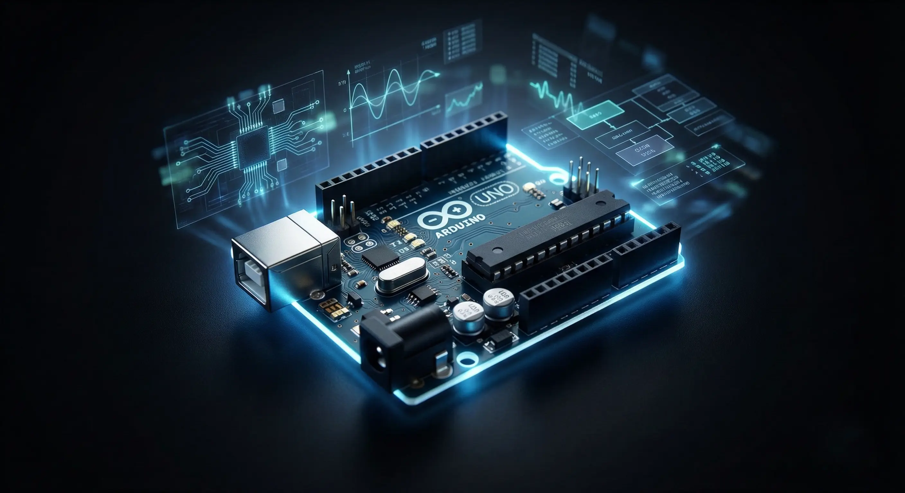

Firmware Architecture Patterns for Scalable Embedded Projects

Introduction to Firmware Architecture Patterns
When it comes to building scalable embedded projects, a well-designed firmware architecture is crucial. Firmware architecture patterns provide a framework for designing and implementing firmware that is modular, maintainable, and efficient. In this article, we will explore some common firmware architecture patterns used in embedded systems and IoT projects.
Modular Architecture Pattern
The modular architecture pattern is a popular choice for embedded systems. This pattern involves breaking down the firmware into smaller, independent modules, each with its own specific function. This approach allows for greater flexibility and maintainability, as individual modules can be updated or replaced without affecting the rest of the system.
Event-Driven Architecture Pattern
The event-driven architecture pattern is another common pattern used in embedded systems. This pattern involves using events to trigger specific actions or responses in the system. This approach allows for greater efficiency and responsiveness, as the system can respond quickly to changing conditions or events.
Layered Architecture Pattern
The layered architecture pattern is a hierarchical approach to firmware design. This pattern involves dividing the firmware into distinct layers, each with its own specific function or responsibility. This approach allows for greater organization and structure, making it easier to maintain and update the firmware.
Benefits of Firmware Architecture Patterns
Using firmware architecture patterns can bring numerous benefits to embedded systems and IoT projects. Some of the key benefits include:
- Improved maintainability and scalability
- Increased efficiency and responsiveness
- Greater flexibility and adaptability
- Enhanced reliability and fault tolerance
Conclusion
In conclusion, firmware architecture patterns play a critical role in the design and development of scalable embedded projects. By using established patterns and frameworks, developers can create firmware that is modular, efficient, and maintainable. Whether you are working on a simple IoT project or a complex embedded system, understanding firmware architecture patterns can help you build better, more reliable systems.